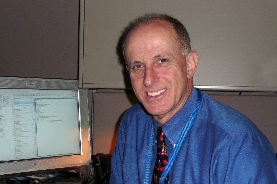
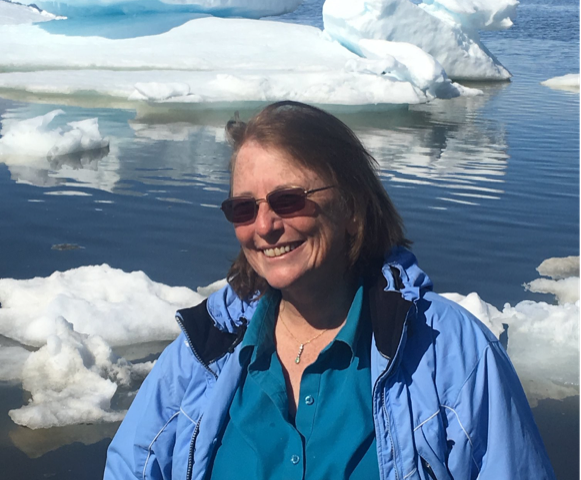

|
Keynote Speeches
Speaker: Luis Kun, 2022 IEEE President Elect for the Society for Social Implications of Technology

Title: Climate Change Effects in Healthcare & Public Health 2022 Dynamics
Abstract:
According to the World Health Organization, Climate change is the single biggest health threat currently facing humanity and the impacts are already harming health through air pollution, disease, extreme weather events, forced displacement, food insecurity and pressures on mental health. Every year, environmental factors alone, take the lives of around 13 million people. Extreme weather events in addition are causing greater damage than ever before (i.e., stronger: winds, hurricanes, tornados, monsoons) which affects both physical and mental health. In a world still coping with the effects of COVID-19, the war between Russia and Ukraine, and the daily increase in both world population and urbanization, the world faces many different risks from a large number of interconnected vulnerabilities that are generated simultaneously. A third of Pakistan is under water for months now, affecting 33 million people and there is no dry land where to drain it. Not only there is no possibility of agriculture production which can cause food insecurity in many other nations, but all type of potential diseases including: cholera, malaria and dengue from bacteria and the billions of mosquitos, are creating a public health nightmare for authorities. Meanwhile in the US farmers and ranchers have to make decision in respect to what to plant and or to get rid of their cattle because of droughts and no water available for those purposes. In the west, Hoover Dam has very little water left which causes problems with availability of hydroelectric power, drinking water in Las Vegas, and water for agriculture in California. Increased water levels in our oceans are causing people to flee from coastal areas to more secure ones, mostly urban areas. These moves increases population density which in turn increases the possibilities of spreading infectious diseases.
Biography:
Dr. Luis Kun is the 2022 IEEE President Elect for the Society for Social Implications of Technology and a Distinguished Professor Emeritus of National Security (CHDS/NDU). Born in Montevideo, he graduated from the Merchant Marine Academy in Uruguay and holds a BSEE, MSEE, and PhD degree in BME, all from UCLA. He is an IEEE Life Fellow, a Fellow of the American Institute for Medical and Biological Engineering, the International Academy of Medical and Biological Engineering, and the International Union for Physical and Engineering Sciences in Medicine. He is the founding Editor in Chief of Springer's Journal of Health and Technology 2010-2020. He spent 14 years at IBM and was the Director of Medical Systems Technology at Cedars Sinai Medical Center. As Senior IT Advisor to AHCPR, he formulated the IT vision and was the lead staff for High Performance Computers and Communications program and Telehealth. In July 1997, he was an invited speaker to the White House and was largely responsible for the first Telemedicine Homecare Legislation signed by President Clinton in August 1997. As a Distinguished Fellow at the CDC and an Acting Chief IT Officer for the National Immunization Program, he formulated their IT vision on 10/2000. Dr. Kun received many awards including: AIMBE's first-ever Fellow Advocate Award in 2009; IEEE-USA Citation of Honor Award with a citation, "For exemplary contributions in the inception and implementation of a health care IT vision in the US." In 2009, he was named "Profesor Honoris Causa" by Favaloro University, (Argentina) and in 2013 "Distinguished Visitor" by the City of Puebla, Mexico. He served as an IEEE Distinguished Visitor for the CS and as a Distinguished Lecturer (DL) for the Engineering in Medicine and Biology Society and SSIT where he chairs the DL Program since 2016. Since 2014, he serves as an Honorary Professor of the Electrical Engineering Department at the School of Engineering of the University in Montevideo, Uruguay. He received in 2016 the Medal of Merit from Mexico’s National Unit of Engineering Associations and was named Visiting Professor by the National Technological University of Buenos Aires, Argentina in 2017.
Speaker: Dr. Leslie Field

Title: How We as Engineers Could Address Climate Change
Abstract:
Only a few years ago, climate change was still regarded by many as a possible issue that would need to be dealt with at some future time, in some faraway place. Even now, some people still seem to regard climate change as an outright lie, perpetrated by some scientists and activists for some kind of personal gain.
But what has become increasingly and tragically evident over the past few decades, is that climate change is not some nebulous and debatable future challenge, but instead, it is a pressing reality for increasing numbers of people around the world, who are suffering fires, floods, droughts, sea level rise, food shortages, water shortages, hurricanes, excessively high temperatures, and melting ice.
In this keynote speech, I will describe some of the key drivers and accelerators of climate change, and some of its key impacts on humanity and the species and ecosystems upon which we all depend. I’ll give an idea of which kinds of climate change challenges must be addressed as rapidly as possible, and outline some potential solutions being researched.
In developing potential solutions, we must remember to be inclusive, and to be sure that any interventions will not cause harm. Climate challenges are here now, and many of them are in someone’s “back yard”, so to speak. We must look to indigenous knowledge, and the people living closest to nature and the land, to be sure we include this expertise and wisdom in anything that we might consider doing in terms of intervention. We must work with transparency and permissions, and we must remember our connection to this earth, these ecosystems, and all the people and species we share this planet with, in order to create useful, viable, acceptable, and effective solutions to the world’s most dire problems.
Over the past decade-plus, I’ve directed more and more of my work towards climate change-related challenges, especially towards preserving and rebuilding the icy reflectivity that historically has served to harmlessly reflect away solar energy. I and many others working on climate, have been working hard to preserve a habitable world for our children, and for the ecosystems and species on which we all depend. I’ve also been teaching at Stanford on Engineering and Climate Change for over a decade, because the next generations - will still have much to work on in their lives and careers, to address climate challenges.
In this talk, I’ll address the timing and urgency of evaluating, testing, and potentially implementing localized and safe interventional climate change solutions for some of the largest challenges humanity and our ecosystems have ever faced. I’ll describe the challenges and accelerating positive feedback loops in the Arctic, and the challenges and importance of preserving glacial ice. I’ll describe some promising solutions and work from around the globe that addresses a number of critically important climate challenges, and the large and inclusive framework we all must keep in mind in order to create viable solutions.
Engineers and inventors like all of us here can play a critical role in addressing climate challenges. We can bring to bear our creativity and our rational, detailed, technical assessments of efficacy, safety, practicality, and cost to potential climate solutions. We can develop and deploy the sensors and satellites at small research sites to determine what could be the effects of small-scale tests of proposed climate interventions. We can also monitor the health of ecosystems under climate change, to determine what is actually occurring throughout our world and its ecosystems, to provide the information processing needed to make sense of that data, and the computational power to feed this complexity into integrated earth system models to predict future conditions, and what actions we might take to improve the outcomes for us all.
It is said that climate change is the one area in which the experts are far more worried than the general public. I hope this presentation will help you understand even more about some of the most important climate effects, feedbacks, and impacts we need to worry about and address, to preserve our future, and that you will share your knowledge about the climate realities with your colleagues, families and friends. We need larger awareness to create and implement the solutions needed, in time to avert the worst scenarios. If you’re not already working on climate challenges, I hope you’ll consider how you might in your “spare time” or full-time, bring your engineering, scientific and inventive skills, and your humanity, to address some of the most serious and urgent widespread challenges we have ever faced.
Biography:
Dr. Leslie Field earned BS&MS degrees in Chemical Engineering from MIT, MS&PhD degrees In EECS from UC Berkeley, and has taught for 12 years on climate and engineering at Stanford University.
An inventor with over 60 issued patents and numerous technical publications and conference presentations, Leslie’s industrial R&D work had large positive impacts for her employers and her teaching has inspired many students. She has since founded successful technical consulting businesses and climate-focused nonprofits, and focuses on solutions for some of the world’s most urgent problems in climate. Recently she received the inaugural Mark Shannon Grand Challenges Award from the Transducers Research Foundation for her long-term work addressing humanity’s urgent challenges.
Leslie earned MS and BS degrees in Chemical Engineering from MIT in a total of 4 years, including an optional BS thesis that developed an experimental technique to determine the superheat limit of non-ideal binary liquid mixtures, and projects at the MIT School of Chemical Engineering Practice, where she led a student group to solve what had been a long-term persistent problem in an industrial process at General Electric.
Leslie earned MS and PhD degrees in Electrical Engineering from UC Berkeley. Her work included development of a process for low-stress silicon nitride, pioneering microfabrication work on low-temperature bonding for devices, and surface-micromachined structures and fluidic interfaces. She won the Samuel Silver Award for combining intellectual achievement in engineering with serious humanistic and cultural interests, and she was the first woman to graduate from the Berkeley Sensor & Actuator Center (BSAC) with a Ph.D.
Dr. Field was the Project Lead of Micromechanics at Hewlett-Packard Laboratories to start a major MEMS R&D effort. While there, she worked on a wide array of MEMS projects for chemical analytical products, micro-wave and optical switches, and disk drive components. The largest economic impact her work made for HP was in solving a microfluidics problem that had delayed the market introduction of a family of large-format inkjet printers, clearing the way to market for this billion-dollar product line.
Dr. Field’s first consulting company, MEMS Insight focused on micro-technologies. Projects included a novel method for drug delivery; modeling passive water heating for swimming pools; and innovative pressure control systems for implantable ocular devices. At the second consultancy she founded, SmallTech Consulting, Leslie leads a diverse collaborative team working on MEMS and nanotechnology. The group has added to its original focus on biomedical devices, a significant focus on sustainable solutions for climate challenges,
Dr. Field’s nonprofit work has focused on climate change. She invented an approach for ice preservation, and then founded and ran Ice911 to collaboratively research, test, and model a localized engineering approach to slow ice melt, one of the far-reaching effects and drivers of global warming. Early in 2022 she left Ice911/AIP to found and run Bright Ice Initiative, whose initial focus is on preserving and restoring glacial ice. The evaluations indicate that the approach has the potential to slow climate instabilities, to give the world a few more years of breathing room in which to urgently complete the transition to sustainable energy and fuels. She enjoys the entire range of the work, including outreach, team collaborations, invention, research, technical evaluations, field studies, and understanding the evaluations from professional climate modelers.
Leslie teaches at Stanford University, serving as an Adjunct Lecturer in EE, where she has been teaching her annual seminar course on Engineering and Climate Change for the past 12 years. The class is focused on climate change, its impacts, and approaches from around the world that are being explored to help address this existential crisis in ecologically respectful and effective ways. The class aims to provide the students a basis in understanding key climate forcers and feedback loops, and to promote an active approach of seeking to explore and develop effective solutions, through innovation and collaboration. She also has mentored student teams at Harvey Mudd College and UC Berkeley.